Trapped in the 6-Inch Universe
Introduction: When the light becomes a trap
The story you are about to read takes you into the dark borderlands of human attachment. It tells of the creeping erosion of a self, of the power of words and of the destructive force of a dynamic that begins as a game and ends as mental captivity.
In a world that is increasingly digital, the boundaries between closeness and control often blur unnoticed. This narrative sheds light on the mechanisms of emotional abuse and gaslighting in the context of a toxic online relationship. It is not a classic BDSM novel, but a psychological case study about addiction, shame and the arduous path back to the light.
⚠️ Content warning
This story deals with topics that may be distressing or re-traumatising for some readers. Please only continue reading if you feel stable enough to do so.
- Hi
I met her in an online chat. She was no ordinary person, she had a presence that changed the room, even if it was just text. Everyone knew her. And even those who didn't know her immediately sensed that she was someone around whom everything revolved. It was hard to escape it. So I didn't either. I started to seek contact.
It was sporadic at first. Short conversations, little moments. I was new, somewhere on the edge of their universe, and that was fine. But over time, something changed. The intervals between our conversations became shorter. She wrote more often. She asked questions. She showed interest. And I realised how much that affected me. How happy I was to be seen.
Slowly something developed between us. A little world of our own, built from words, thoughts and shared moments. Something that felt special. Intense and real.
- The Breach of the Defensive Wall
"Tell me more," she typed. Again and again. It wasn’t a simple question, it was relentless excavation, a drill boring through layers of old, hardened rock. Inside me, conflict pounded in loud, uneven rhythms. One part of me longed to finally be seen, while the rest screamed in terror. I wasn’t used to letting light into those dusty corners. Silence had always been my default, my only form of safety. It was so damn complicated to compress feelings into sentences for which I had never learned a language. Every word felt like a betrayal of myself, like a stone being torn from my protective wall. She pushed deeper into my innermost self than I had ever thought possible, until I reached the boundary where explanation ended. I froze. There were memories that would crumble to ash the moment they were exposed to daylight, my last shred of privacy, my only armor. With numb fingers, I typed, "I can’t talk about that right now."
Then the mask tore away. The gentleness I had mistaken for love gave way to a cutting, icy precision. No empathy anymore, no patient waiting, only the naked force of an ultimatum. She threatened to take an axe to everything we were. A single click, one final "offline," and she would destroy everything that had held my life together over the past months. "If you don’t give me everything, you are nothing to me," burned from my screen into my retina. It wasn’t an offer, it was the execution of my self-worth.
I couldn’t breathe. The room around me shrank until nothing remained but that flickering chat window. The fear of falling back into insignificance was greater than my pride. So I gave in. With trembling fingers, I dissected myself, typing my deepest abysses into this cold, digital grave. Back then, I thought she would open me, set me free. But in truth, she didn’t open me, she broke me open. She didn’t want access to my soul. She wanted to make sure there was no place left inside me where I could be safe from her. She didn’t want the key. She wanted to blow the lock apart.
- The Conditioning of the Mind
After she had torn down my walls, she began clearing away the rubble and reshaping the ground. It was intoxicating. It was no longer just about kinks or fleeting games. It felt as if she were carving me out of the chaos of my own existence. I was mesmerized by the surgical precision with which she observed me. Every "Don’t say it like that," every "Don’t use that tone," and "Your choice of words is disrespectful" did not sound like reprimands to me, but like revelations. I was grateful for her strictness. I thought, finally someone sees me so clearly that even the smallest cracks do not go unnoticed. I felt valuable because I was worth that kind of effort to her.
I adapted the way glowing metal yields to a mold. Before I sent a message, I paused, felt the pulse in my fingertips, and read my sentences over and over again out loud. I searched for the rhythm she wanted to hear in me, a resonance that would make her smile. It was intoxicating to correct myself before she even had to. I deleted, refined, and polished my thoughts until they gleamed. I wanted to be that "perfect version," that ideal she sculpted out of me with the mastery of an artist.
I enjoyed the feeling of being shaped by her. I did not notice that my own self was becoming a disruption, a rough noise in her perfectly composed symphony. I was no longer myself. I was a script she rewrote every day, and I loved every single word she chose for me.
- The Storm Out of Nowhere
But the cruelest part was not the slow reshaping of my being. It was the total unpredictability of her storms. Her outbursts did not come with warning. They did not gather on the horizon. They were simply there, a whip crack in absolute silence. We could be in the middle of the lightest small talk about the weather or the day. I felt a deceptive warmth, almost something like ease, and in the next fraction of a second, the entire reality flipped. One wrong adjective, a forgotten emoji, or a reply that came three minutes too late, and the world went up in flames.
This sudden, malicious cold was not an argument. It was a psychological execution. When her tirades poured onto my screen, everything went black for a moment. My body reacted before my mind could even grasp the words. My heart slammed against my ribs as if it wanted to break free, and a wave of nausea rose inside me. Every time my phone vibrated on the table, adrenaline shot through my veins like battery acid. It was a sensory assault.
I wanted to run. Every instinct in me screamed, put the phone down. Delete the app. Run. But I was paralyzed. I stared at the flickering light of the screen, unable to look away while the words cut into me like shards of glass. I could not leave, because with my escape she would have cut off my oxygen as well. I was trapped in a permanent state of high alert, a soldier in a living room filled with mines. Every step could be the last, every word could trigger the explosion that would destroy everything. I was an addict craving her laughter while being terrorized by her silence. I was overwhelmed by the violence of her rejection and even more by my own inability to simply turn around and save myself.
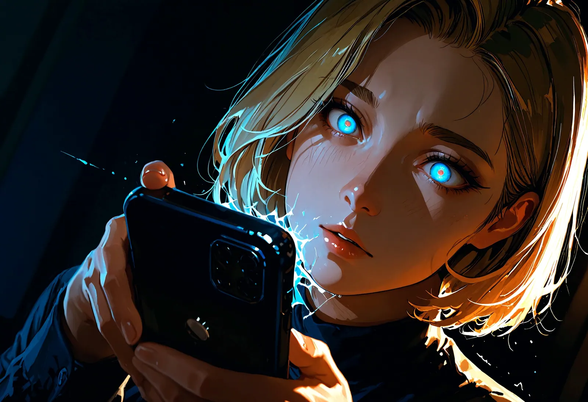
- The Architecture of Dependency
At some point, I realized that this volatility was not random. It was the architecture of my prison. By never letting me know where I stood, she kept me in a permanent emotional crouch. But it was even more insidious than that. I began to believe that behind every one of her words there was a deeper meaning, a hidden test. Every message, every silence, and every cool half sentence became, to me, an encrypted obstacle course I had to complete flawlessly.
I became a manic decipherer of my own oppression. Was that "Good night" without a period a test of my attentiveness? Was the delayed reply a measure of my tolerance for frustration? I searched every scrap of text for clues, for the rules of a game whose instructions only she possessed. I had to pass. I had to prove my worth, over and over again, as if my entire existence were nothing but one endless aptitude test for her love. My brain ran hot trying to interpret the oracle of her moods. My work, my friends, my real life, all of it decayed into pale background noise, scenery that only distracted me from my true task: being worthy of her.
And when I supposedly "passed," when after days of coldness she tossed me a tiny crumb of tenderness, it felt like pure oxygen after drowning. I was infinitely grateful to her for stopping the punishment. I did not even notice how perverse it was. I loved my tormentor for loosening the thumbscrews for a moment. I clung to those tiny scraps of mercy and baptized them "soulmate connection." In truth, I was a marionette proud of how gracefully it danced on its own strings while begging for permission to twitch at all.
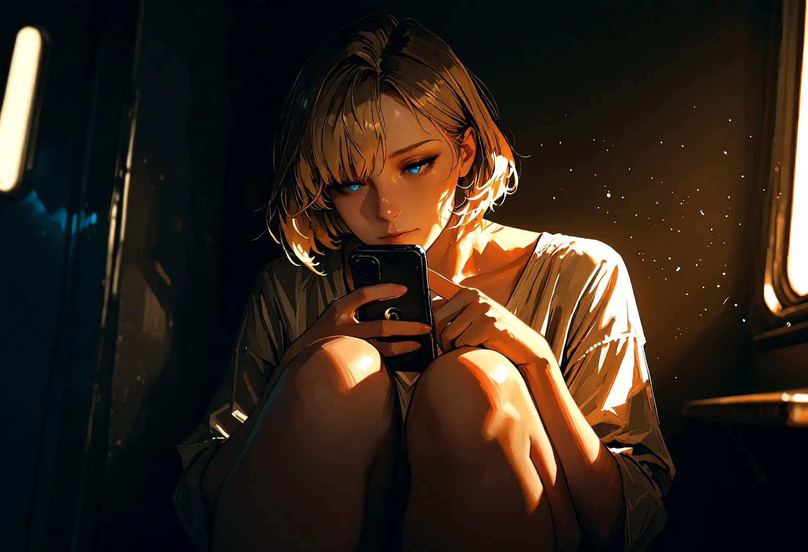
- The Poison of Exclusivity
It began gradually, like a fine mist settling silently over my entire social horizon. She never directly forbade me from meeting other people. She was far too subtle, far too skilled in the art of suggestion. She planted doubt like tiny splinters beneath my skin. "Your friends... they are so superficial, don’t you think?" she whispered digitally after I had come online late at night. "They only drag you into their triviality. They chew on the straw of everyday life while we touch the core. Only I see your true self."
Those words felt like a cloak of heavy, dark silk. A privilege. Us against the rest of the world. An exclusive club for two, a high wire suspended over the abyss to which no one else had access. But in truth, it was not an invitation. It was a siege. Every time I spent time with someone else, a stale aftertaste clung to my palate. I sat at the dinner table with my family, heard the clatter of silverware and the shrill laughter of my siblings, and everything seemed so... two dimensional. Like a badly lit stage play.
I felt the phone in my pocket like a pulsing organ. The blue light of the screen was the only thing that still poured color into my world. I longed for the sharpness of her demands, for the electric shock of her attention. The voices around me turned into dull static, into irritating interference.
I started canceling plans. I invented excuses for why I could not come to the movies, felt the clammy taste of the lie in my throat, and swallowed it down. I did not want to "waste" my energy on people whose words felt like dry paper. I walled myself into my room, surrounded by stale air and the cold glow of my screen, my only umbilical cord to what I believed was "real" life. I was utterly alone, wrapped in the silence of my isolation, but I told myself I had finally arrived. I did not realize that the exclusive club I sat in was a solitary cell.
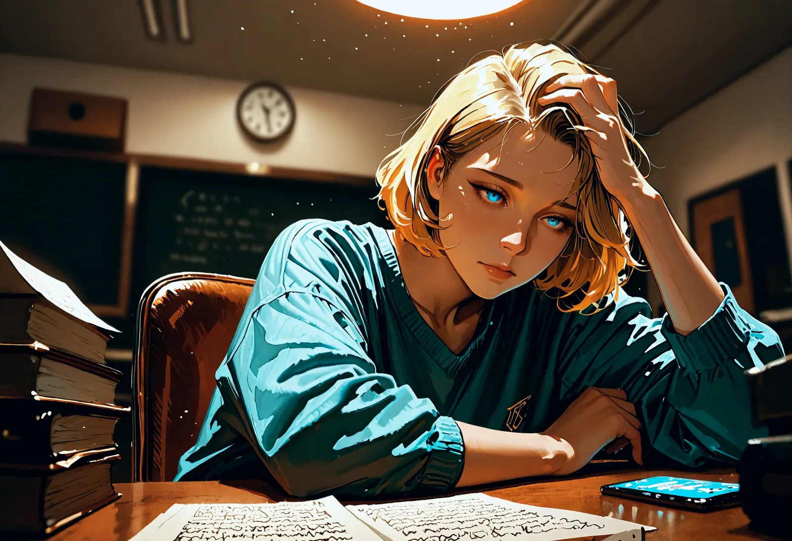
- The Silence of Shame
The worst part was not the coldness, but the loneliness I guarded like a precious treasure. Whenever she punished me again with one of her unpredictable sentences, that glassy silence lasting for days, isolating me from the rest of the world like a bell jar, there was no one I could confide in. Not because I was not allowed to, but because I did not want to. Who would have understood this kind of pain?
How could I have explained that my entire universe was collapsing inside that flat black device in my pocket? That I lay awake at night, the pale light of the screen on my face, waiting for a single word the way a dying man waits for the first drop of rain? Shame burned on my skin, but it was not directed at her. It was directed at myself, because I knew how the outside world would judge it. "Just delete her," my best friend would have said. "It’s only the internet."
But those words sounded to me like blasphemy. They did not understand that we had reached a depth that required pain. To me, this state was not abuse. It was a kind of initiation. I defended her against every critical thought my friends might ever have spoken by never letting them speak at all. I became the wall around our shared secret.
When someone asked me why I looked so pale, why my hands trembled when I stared at my phone, I smiled that thin, knowing smile. "I’m just working on something very intense," I said. In truth, I was busy polishing the shards of my soul so they would gleam in the light she cast on me. I was not her victim. In my own mind, I was her most devoted soldier. I hid the pain beneath layers of loyalty while growing thinner and thinner inside. The truth was not too embarrassing to say out loud. It was simply too sacred for a world that only ever scratched at the surface.
- The Dance Across the Minefield
My daily life became one long, silent performance. The unpredictability of her moods had conditioned me like an animal that has learned that even standing still can bring punishment. I developed a kind of sixth sense for her frequencies, a fine tuned sensitivity that passed even through the dead shell of the phone. A missing exclamation point at the end of a sentence felt like an approaching thunderstorm. A ten minute delay in her reply froze my blood.
I became a master of pleasing. It was no longer mere compliance. It was an obsessive art form of anticipation. Before I sent a message, I read it five times, ten times, checking it for every possible misinterpretation that might provoke her displeasure. I erased my own self, letter by letter, until nothing remained but what she wanted to see in me.
We could be talking about a movie, casually, almost tenderly, and I would feel my shoulders drop a fraction. And then, out of nowhere, the lash: "I don’t like your tone. You’re becoming careless. Maybe I need someone who values my time more."
The adrenaline shot so hot into the back of my neck that I felt dizzy. My heart pounded against my throat while my fingers flew across the screen, damp with the sweat of panic. I typed apologies for crimes I had not committed, for nuances I had not even perceived. I begged for forgiveness with a fervor that was almost religious. "I’m sorry, I was careless. I’ll do better. Please, do not take your light away from me."
I withdrew myself further and further until I was nothing but an echo of her wishes. Every time she became "normal" again after one of those executions, every time she sent me a short, merciful smiley, I felt a gratitude that nearly made me cry. I completely forgot that she was the one who had created the pain in the first place. I saw only the hand that had stopped striking, and I kissed it for that. I thought this was love, this total submission to the oracle of her moods. In my mind I was not a victim, but a student on the verge of mastering the most important lesson of his life: how to stop existing in order to be everything to another person.
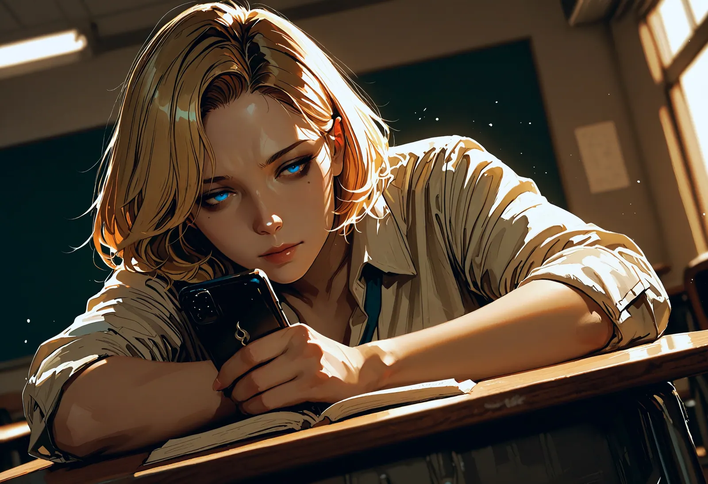
- Total Spiritual Nakedness
She had driven me to a point from which every bridge back into the world was already burning. It was a kind of spiritual nakedness that felt like a second skin, thin, raw, and defenseless. She knew every one of my scars, every buried trauma I had offered to her like a sacrifice on that desperate night. And she used that knowledge with the precision of a surgeon who knows exactly where the cut will hurt most. Whenever I made even the faintest attempt to draw a boundary, she reminded me with casual cruelty of my "abysses."
"Who would want you if they knew what you really are?" her voice echoed in my head until it became my own. I felt deformed, unusable for the "normal" world out there. The people in my old life, my friends, my family, suddenly seemed like happy children playing in the shallows while I drifted with her in the deep black ocean. They could not understand me. No one could. Her standards were so high, her intensity so absolute, that everything else seemed like a pale imitation of life. Who but her would have the strength not only to see this "filth" inside me, but to endure it?
I clung to her as if she were my only anchor in a bottomless exile. In truth, she was the one who had pushed me into that void in the first place, but my mind had long since erased that causality. I was like a prisoner kissing the hand of his warden because it was the only one that allotted him his daily ration of light.
I felt the hopelessness like a leaden weight in my limbs. Where could I even have gone? Into a world that would declare me "crazy"? To people who could not comprehend my "depth"? There was no way back. I had forgotten how to breathe without her permission, how to exist at all without her validation. I knew the sun outside shone brighter, but its rays felt strange and biting on my skin. I belonged in the shadow of her screen. I was alone, yes, but I told myself that this loneliness was the price of a truth only the two of us shared. There was only her. And behind her came nothing.
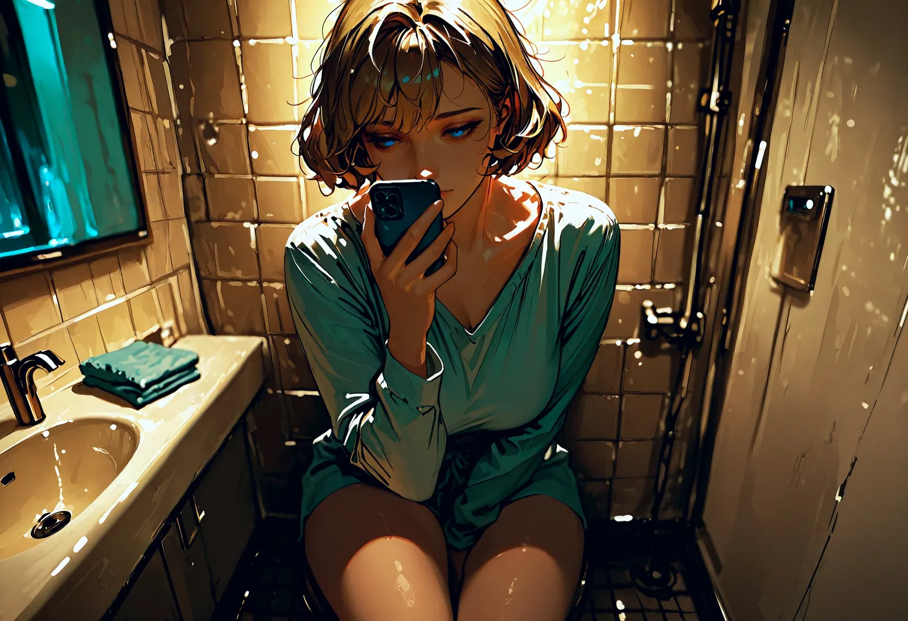
- The Collapse of the Facades
At some point there was no longer enough space inside my skull to keep the brittle theater of my daily life separate from the all consuming intensity of her world. I sat in the lecture hall, surrounded by the soothing scratch of pens and the pale light of fluorescent tubes. An exam was coming up, one of those crossroads for which I should have burned for weeks. But my fire had long since shrunk into a single blue flame in my pocket.
Every time the phone vibrated, my whole body flinched. It was not a mere signal. It was an adrenaline drenched electric shock that instantly vaporized every rational thought. The blank page in front of me looked like a white abyss, while the glowing rectangle in my palm was the only thing that seemed to possess any depth.
She demanded presence, total, moment to moment availability that took no account of the banal laws of the outside world. "If you really value me, you’ll find a way," she typed, a digital ultimatum hanging at my throat like a slab of lead. So I wrote to her beneath the desk, fingers cramped, gaze fixed straight ahead while the professor lectured about macroeconomics. I completed her "tasks," drafted obedience scenarios, dissected my shortcomings from the previous night. I invested my entire mental capacity in a construction of ones and zeros while my own future silently collapsed.
On the day of the exam, I was nothing but a shell. My head was so stuffed with her, with the fear of her silence and the trembling before her criticism, that there was no room left for facts. I stared at the questions and saw only her demands. I failed. Completely.
And the most horrifying part? When I confessed it to her, hoping for a spark of comfort, for some gesture of humanity, I could feel her smile through the screen. It was full, cool satisfaction. "Maybe this is a sign that you should finally focus entirely on what matters," she typed, and the coldness of her words burned like liquid nitrogen. In that moment, an insight flashed through me, one I immediately suppressed: she did not want me to fly. She wanted me to break my own wings so I would never again find another place to land except with her. She wanted my total disempowerment disguised as "focus."
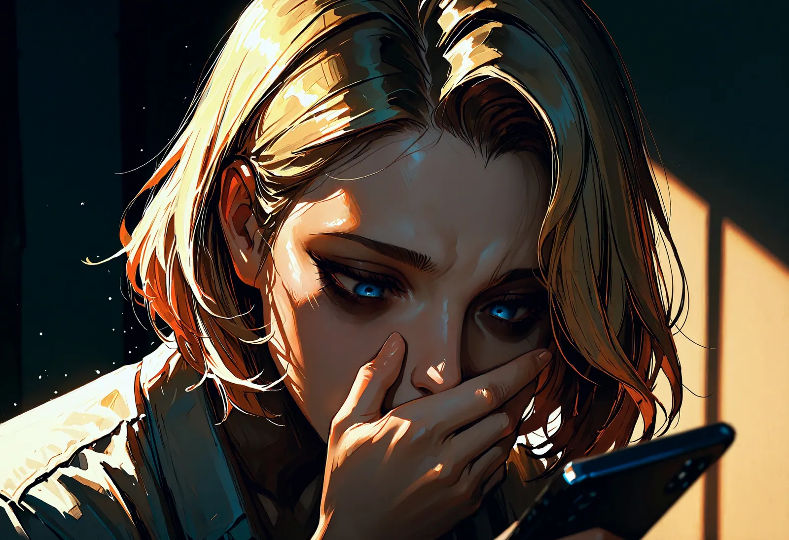
- Physical Exhaustion
My body was smarter than my mind, but I forced it into silence. It began to rebel against the permanent high voltage state I was living in. Sleep was no longer a place of recovery, but dangerous territory I entered only in minute long increments. I was terrified of missing a message, disturbing the rhythm of her "thought surges," or not reacting quickly enough when she cast her digital nets at night.
I sat there at three in the morning, the world around me long silent, with only the pale bluish glow of the screen burning into my retinas like corrosive acid. My eyes felt as if hot sand had been packed behind my eyelids, and my fingers shook so much I kept mistyping. Every time I hit backspace to correct my replies, I felt the cold sweat on my forehead. My stomach was no longer an organ, but a hard, unyielding knot that rejected all food. The smell of meals made me nauseous. I lived on adrenaline and the fleeting relief of a merciful word from her.
I was a wreck, an emaciated shell of myself, but to her this decline was the ultimate compliment. She called the deep dark circles under my eyes "the shadows of our intensity." She romanticized my destruction as if it were a necessary sacrifice on the altar of our connection.
Whenever, in moments of total exhaustion, I whispered that I could not keep going, that I just needed sleep, her gentleness instantly turned into cutting mockery. "You are weak," she typed, and I could practically smell her contempt. "You want depth, you want something special, but you are too cowardly to pay the price. True devotion knows no fatigue."
That sentence worked like a whip. I did not want to be "weak." I did not want to belong to the ordinary people who simply closed their eyes at night. So I ignored the stabbing in my chest and the dizziness when I stood up. I functioned only as a biological battery for her smartphone, a human extension of an app. I was so endlessly tired that my thoughts moved only like thick tar, but the naked fear of the silence, of that black hole that would open if I stopped replying, kept me upright. I sacrificed my substance millimeter by millimeter just to postpone the moment when she would finally discard me.
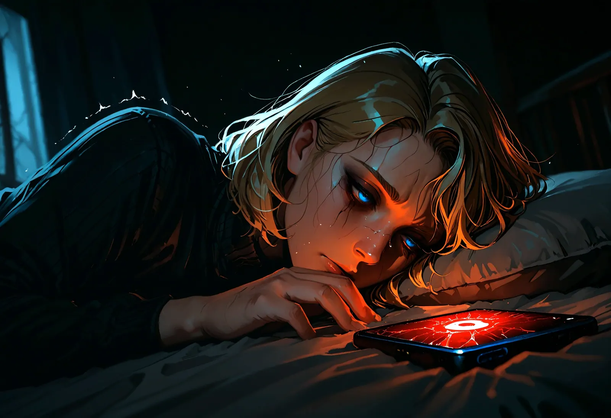
- The Invisible Shackles
The paradox of my situation was so grotesque it tore me apart from within. I saw the knife, I felt the blade, and I knew exactly where the handle was. Deep inside me, beneath layers of exhaustion and denial, a small hoarse voice screamed that I would die if I did not stop immediately. I stared at that tiny digital button: Block. It was my entire horizon. My thumb often hovered centimeters above the glass, a tiny piece of flesh suspended over absolute freedom.
One click. A single mechanical impulse of my muscle, and the terror would have ended. No more racing heart when the phone vibrated, no more nighttime interrogations, no more fear of the next annihilating ping. The world could have come to a halt in an instant.
But my arm felt as if it were made of liquid lead. It would not obey me. Every time I formed the decision, an invisible rope tightened around my lungs. The thought of then staring into the silence of my room and realizing there was nothing left, no task, no judgment, no burning "you belong to me," was more unbearable than any torment she inflicted on me.
I had leveled my real life so thoroughly to the ground, alienated my friends, and sunk my ambitions into digital mud so completely that I believed I would simply dissipate without her cruelty. I was like a ghost who only felt that he still existed through the friction of his chains.
I clung to my tormentor like a drowning man clings to a burning plank. I was an addict cursing the needle while pressing it deeper into the vein because withdrawal felt like death. I was the only person in the world holding the key to his cell and still crouching before the open door, terrified of the vastness of the sky. I was free to leave at any moment, and that was the cruelest shackle of all. Because if I stayed, then it was my fault. If I suffered, then it was my choice. I was the most imprisoned person in the world, shackled to a glowing screen that was at once my executioner and my only witness.
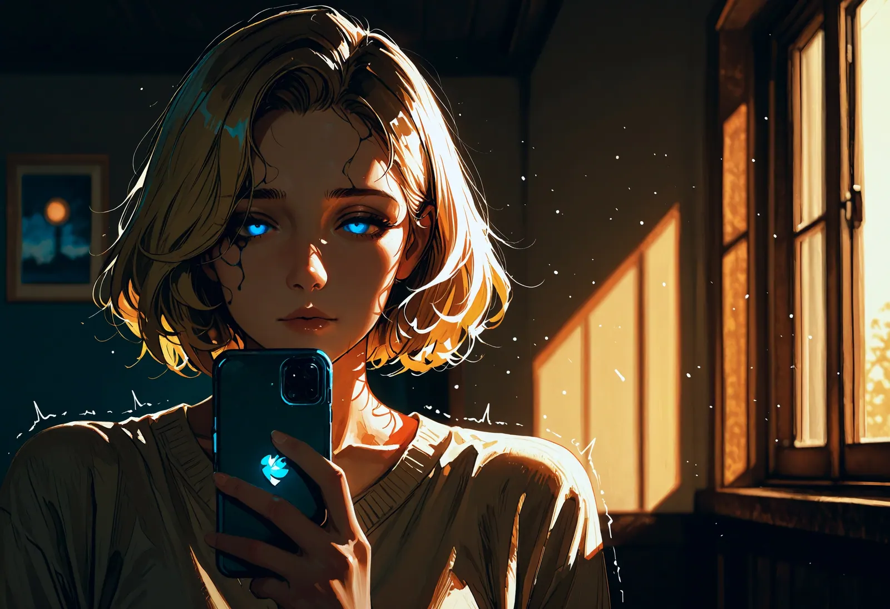
- Total Estrangement
When I look in the mirror today, I no longer see a face. I see a sheet of glass behind which someone stands whom I once knew a long time ago. My own voice sounds in my ears like a recording played with a delay, foreign, thin, and without resonance. I have forgotten how even to think my own desires, let alone speak them aloud. Every movement of my will has decayed into white noise.
The total dispossession of my soul reveals itself in the most banal moments. When someone asks me in passing, "What would you like to eat?" naked panic breaks out inside me. My mind does not race to find an answer. It races to simulate her potential opinion of that choice. Would it be too greedy? Too ordinary? Would she laugh at that decision? I have become incapable of making any choice that has not first passed through the filter of her expectations. Without her evaluation, every option feels meaningless.
I am no longer a person. I am an echo. A shadow that has shape only because she casts the light. My self confidence is not a ruin that could be rebuilt. It is fine gray dust that is blown away by the slightest gust of her moods. And she enjoys this dominion over nothingness. She sits enthroned above this field of rubble and lets me feel with every syllable that without her ordering hand I would sink into chaos. "You know you tend to be wrong," she says with that soft, murderous certainty, and I nod. I thank her inwardly for taking over my thinking because I can no longer bear the burden of my own existence.
I have been spiritually dispossessed completely. My mind is nothing but an operating system running her commands. And the most perverse part, the thing that still makes me shudder most at night, is the sense of peace that floods through me when, at the end of the day, she delivers her verdict: "You functioned well today." In that moment I feel valuable. Not as a person, but as a tool that has fulfilled its purpose. I disappeared, and I watched myself slam the door behind me.
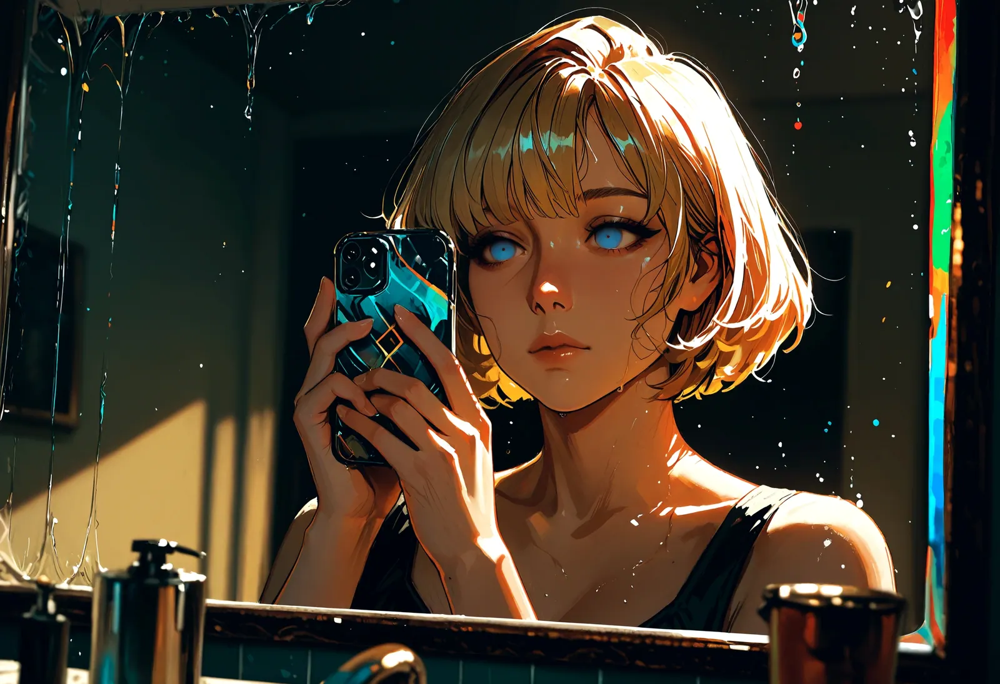
- The Slaughterhouse of Comparisons
Just when I thought I had reached the absolute zero point of my existence, she proved to me that beneath the ground there was still a deeper dungeon. She changed tactics. The subtle insinuations gave way to a surgical arsenal of comparisons. She began openly talking about "the others," no longer as an abstract danger, but as living proof of my failure.
"Look at X," lit up on my screen while I lay in the dark with throbbing temples and hands shaking from hunger. "She completed the task in half the time. Without this endless whining. Without these emotional outbursts you keep subjecting me to."
It was as if she were pressing a glowing iron directly into the open wound of my exhaustion. I had driven my studies into the wall, blown up my social bridges, and sacrificed my health on the altar of her pride, and to her it was all nothing more than "subpar performance." I was defective merchandise.
I felt the cold sweat on the back of my neck while I raised the profiles of these strangers into gods inside my head. She used the new sub like a gleaming factory fresh model to confront me with my own rust. I was the old toy beginning to squeak, and she enjoyed the cruel spectacle of me bending even further, crawling even lower, only to be "interesting" again.
Instead of anger, I responded with a deranged surge in performance. I fought shadows, people I had never met, in an absurd competition for recognition she withheld from me with calculated precision. I wanted to prove that I was better than X, more loyal than Y, more capable of suffering than Z. I sacrificed the last remnants of my dignity to win back a place in the front row of her slaughterhouse. I did not realize that she was deliberately reducing my worth to zero in order to bind me even tighter to her heels in a spiral of jealousy and self hatred. In her world I was no longer a person. I was an outdated version of software she could replace at any time with an update. And I? I begged not to be uninstalled.
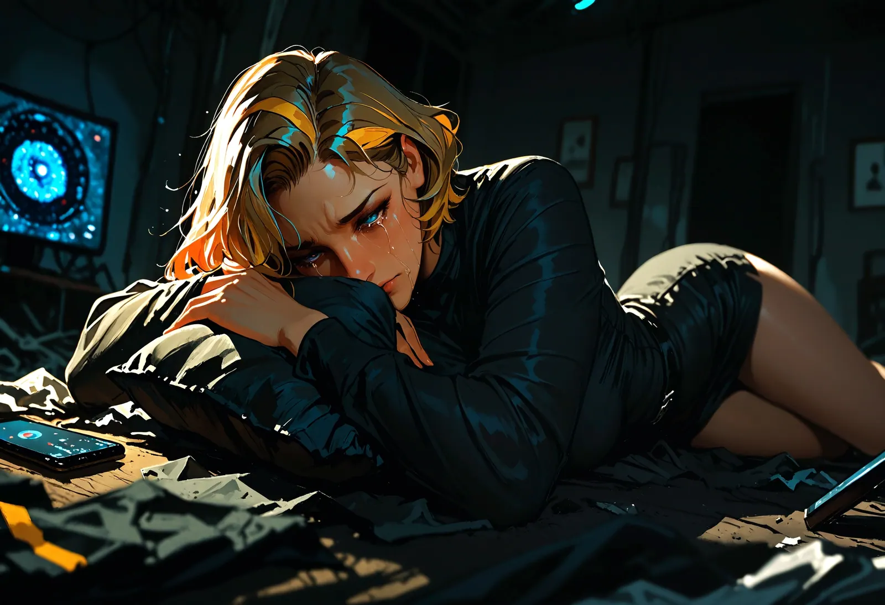
- The Last Spark of Resistance
The break came on a rainy Tuesday evening, as the world outside dissolved into a gray indifferent veil. I sat on the edge of my bed, my limbs feeling like rotten branches that might snap at the slightest movement. I had consumed hardly anything but water and adrenaline for days. My head was no longer a place of thought, but a dull room filled with cotton and the pale echo of her voice.
Then the phone vibrated. That familiar painful jolt against my thigh. She demanded another "task," one of those absurd, time devouring humiliations that would once again have swallowed my entire night and drained the last remainder of my substance. It was a test of her power disguised as a "devotion exercise."
And there, in the deepest darkest pit of my existence, something unforeseen happened. A tiny, almost extinguished spark of me, a remnant of the person I had been before her, flickered in the ashes. It was not a heroic uprising. It was the exhausted whimper of a soul. With fingers shaking so badly I could barely hold the phone, I typed the most dangerous words of my life:
"I can’t do this anymore. Please. I just need one night of sleep. I simply can’t manage it today."
I stared at the screen. The seconds stretched into eternities in which the ticking of the clock on the wall sounded like hammer blows. My heart slammed against my ribs like a trapped bird hurling itself against the bars of its cage. In that moment I hoped, against all logic, against all experience, for a spark of the gentleness she had pretended to have at the beginning. I begged silently for mercy, for a "Get some rest," for some sign that I mattered to her as a human being and not merely as a function.
The silence that followed was not the absence of sound. It was a massive crushing weight, a shroud of pixels and light. Then they appeared: the three dancing dots. She was typing. My breath caught, my vision blurred. I waited for the verdict. But what came was no comfort. It was the total surgical removal of all warmth.
"I see," it said. Just that one word. Cold as liquid nitrogen. "Perhaps I overestimated you. If your comfort matters more to you than our connection, then everything has been said. Contact me again only when you know what your priorities are."
The screen went black. The connection was severed. In that moment the scenery of my life did not merely collapse, it imploded. I had dared to draw a boundary, and she had immediately cut off the air supply. I sat in the darkness of my room, the phone like a dead hand in my own, and felt utter insignificance crash over me like a tidal wave. That "no" had been my act of liberation, but the price was the immediate execution of my entire self image.
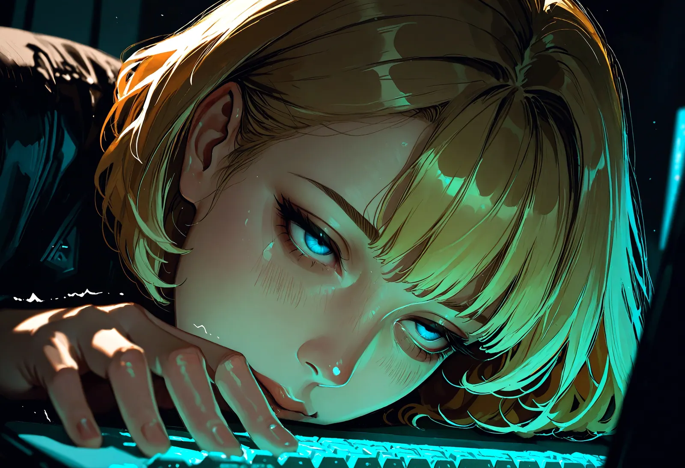
- Execution by Deletion
Her response was not an argument, not a final protest from a wounded soul. It was a sterile surgical execution. "Your weakness bores me," it said, and the words felt like ice cold metal on my skin. "I laid a world at your feet, and you respond with ingratitude and mediocrity. You never understood the core of our dynamic. You are not worthy of being part of my universe."
And then the thing I had feared for years with almost religious terror happened: the world stopped existing. A brief flicker, an error message, and then total blackness. Blocked. Deleted. Thrown off the server as if I had never been anything more than an annoying programming error.
In a single second, everything I had breathed for, bled for, and denied myself for evaporated. The glowing window in my hand, my only connection to light, became a cold black piece of glass. The titles, the roles, the intoxicating feeling of belonging, all of it vanished into digital nothingness. She left me behind in my dark room in the middle of a field of ruins I had once called my life. No goodbye. No mercy. With the cruel efficiency of a delete key.
The pain of separation was not a burning. It was a tearing. As if with one violent yank she had pulled my entire nervous system out of my body. I sat on the edge of the bed, the phone a dead weight in my hand, and waited. I waited for the ping, for the vibration, for the sign that it had only been a test, another especially cruel lesson. But the silence was absolute. It was so loud my ears rang.
I felt a helplessness that nearly drove me insane. I wanted to scream, to explain myself, to beg for forgiveness, but there was no longer any recipient. My words crashed against the cold wall of the block and fell back onto me as meaningless echoes. I was a ghost in an empty apartment. Without her observation, without her judgment, without her anger, I felt invisible. If she no longer saw me, did I still exist at all?
I curled in on myself while a wave of nausea rolled over me. Loneliness was no longer a state. It was a physical violence constricting my throat. I was nobody. A discarded toy. That night I understood the true meaning of insignificance: I had not even been worth one final hateful word to her. I had simply been clicked away, and with me the entire architecture of my being.
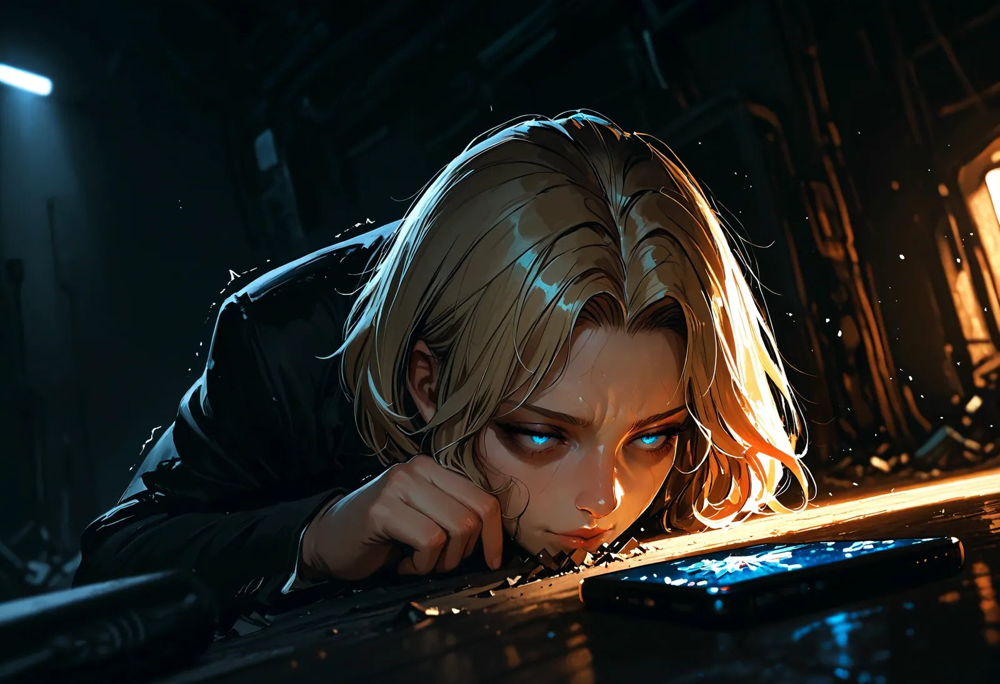
- Awakening in the Vacuum
The first days afterward were not time. They were a black hole swallowing all light. I sat on my sofa, the phone like a dead relic in my hand, staring at the empty glass surface until my eyes burned. The silence in my apartment was so absolute that it roared in my ears. I waited for a signal that would never come, and every minute without that familiar ping felt like slowly bleeding to death.
Withdrawal was physical torture. My body screamed for the adrenaline of her coldness and the endorphin of her rare mercy. I shook uncontrollably, cold sweat stood on my forehead, and in the darkest hours of the night the blackness felt so crushing that I seriously considered simply ending the pain. I could no longer see any purpose in breathing in a world where her deletion had declared me nobody.
When sobbing fits shook me, it was not liberating crying. It was violent tearing. My heart felt as if it were physically bursting apart in my chest, and an invisible rope tightened around my throat until I had to gasp for air. I wanted to write her emails, type letters, throw myself at her digital door and beg forgiveness, for my "failure," for my "mediocrity," for merely being human. I wanted back into the cage so desperately because freedom felt like falling into a bottomless frozen void with no handhold anywhere.
But then, in the agony of that total isolation, I began to hear. At first it was only the ticking of my clock, which I had ignored for years under the noise of my dependency. Then, very slowly, my vision sharpened for the reality I had sacrificed for her. I saw the stack of unopened bills and warnings, the dried brown skeletons of my plants, the ruins of my studies lying in wreckage before me.
In that gray light I saw her for the first time without the distorting filter of my addiction. I saw the mechanism behind the spell. I understood how masterfully she had pressed my deepest fears like keys on a piano to play the melody of my obedience. Her unpredictability, her rage, her sudden coldness, none of that had been a "test" of my strength. It was the naked, cowardly strategy of abuse.
She had never "opened" me to free me. She had broken me open to plunder me. She had fed on my self worth until nothing remained but this hollow shell now sitting on the sofa and trying to learn how to breathe again. The realization was more bitter than the pain of the loss: I had worshiped a goddess who in truth was nothing more than a parasite of my soul.
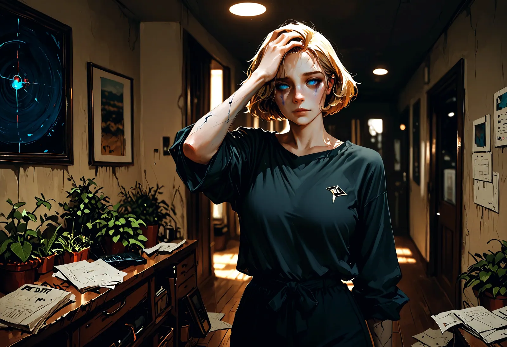
- The Laborious Breathing Without Permission
The way back was not a heroic act of liberation, not a sudden tearing open of curtains. It was a slow, almost painful relearning of gravity. I had to learn to put weight on my own legs again, legs that had been programmed for so long only to kneel before her. It began with the smallest things: forming a sentence without turning it over three times in my mind for fear it might sound "disrespectful." Eating when my stomach growled, not when it fit into a time slot dictated by her.
I am still scarred, I know that. When my phone vibrates on the wooden table, my heart still beats that frantic panicked rhythm for a second. When someone gives me a compliment or shows genuine interest, my senses still instinctively flinch back as if expecting the hidden poison barb behind the beautiful words. But I stay where I am. I do not run anymore.
I picked up the receiver. I called the people I had thrown away for months like annoying ballast. My voice trembled when I spoke, ready for reproaches, ready for "I told you so." But it did not come.
"I’m glad you’re back," they simply said.
I cried when I heard those words. No interrogations. No conditions. They just held me while I sat in the rubble of my shame. In their warmth, the digital cold of the last months suddenly felt like an evil dream fading in the morning sun.
I am no longer a satellite in an elliptical unstable orbit around a foreign dark sun. I am a small dented planet slowly learning that it has a core of its own. The cold of space is still there, but at least I am no longer burning in her fire.
I took my power back. Centimeter by centimeter, word by word. It belongs to me. It is not a gift to be loaned out, but the foundation on which I stand. And I swear to myself, as I draw a deep breath for the first time in an eternity without permission: I will never again hand that power to someone who uses it as a weapon against my soul. I am back. And this time, I belong only to myself.
Afterword: When the Sun Burns Too Hot
The story you have just read is a fictional narrative, an intensified portrayal of what happens when devotion slowly turns into self abandonment. But fiction often carries a cruel core of truth: it makes visible the mechanisms that unfold so quietly in everyday life that we only notice them once our identity is already lying beneath the rubble.
BDSM and power exchange can be beautiful, enriching, and healing. But they follow a sacred principle: they should strengthen you, not hollow you out. If a dynamic systematically makes you smaller, it is no longer play. It is abuse wearing something glittering.
The Checklist of Quiet Alarms
If you recognize yourself in parts of this story, that is not a reason to panic, but it is a reason to pause. Watch for these signals:
- The extortion mode: Are you being threatened with the end of the relationship when you set boundaries or do not immediately reveal "everything" about yourself?
- The unpredictability: Do you feel like you are walking through a minefield? Does the other person’s mood swing unpredictably between extreme closeness and sudden punitive coldness?
- The gradual isolation: Do you catch yourself neglecting real friends and hobbies because they do not fit the "vibe" of the dynamic, or because your Top subtly speaks badly about them?
- The performance trap: Does your role feel more like an unpaid exhausting full time job than like a game that brings you joy? Are you suffering from sleep deprivation or neglecting your work or studies?
- The censorship in your head: Do you weigh every sentence in daily life against whether it is "appropriate" for the dynamic, and in the process lose your own authentic voice?
Your Life Is Something Precious
No person, no matter how fascinating, dominant, or "unique" they may appear, has the right to use your identity as fuel for their own ego. A healthy dynamic needs a stable framework of respect and care. It should be part of your life, not consume your entire life.
The fundamental truth: Power in BDSM is not absolute ownership. It is something on loan. You are the person who grants that power, and you are the person who can reclaim it at any time. A Top who attacks your autonomy instead of protecting it does not deserve your devotion.
What You Can Do Now
If you feel yourself dissolving right now:
- Talk to someone outside of it: Speak to someone who has nothing to do with the scene or with this person. Someone who knows you as the person you were before the dynamic.
- Set a test boundary: Say "No" once to a task, or ask for a timeout. The other person’s reaction will tell you everything you need to know.
- Reflect on your value: You are interesting and valuable even without titles, without tasks, and without the gaze of a Top on you.
Take care of yourself. You are the main character in your own life. Do not let yourself be reduced to an extra in someone else’s story.
*I was the bedrock for your victory’s height,
The shadow-strength that kept your vision bright.
I made myself so small so you could glow,
A mirror for the seeds you didn't sow.
I was the oil that kept your engine smooth,
The buffer meant to level and to soothe.
I took the friction, swallowed every blow,
And walked through filth to help your power grow.
A tool is valued only while it’s keen,
A silent part within your grand machine.
But when the rust and wear begin to eat,
Your passion turns to cold and swift retreat.
There is no "thank you" for the heap of rust,
Just cold indifference and a broken trust.
The part is swapped the moment service ends,
And no one looks for tools amongst their friends.
The sting is not that I have been replaced,
Or that my service has been erased.
It is the truth that turns the final page:
It was I who chose this hollow cage.*
What Observers Can Do: A Guide for Friends
Watching someone you care about slowly "disappear" into a toxic dynamic—whether it’s a job, a relationship, or a specific lifestyle—is incredibly painful. When the Architecture of Erasure begins, outsiders often feel helpless. However, you have more influence than you might realize, provided you remain patient and strategic.
1. Maintain tℎe Connection (At All Costs)
Isolation is the primary weapon of manipulation. The manipulator wants the victim to believe that they have no one else to turn to.
- What you can do: Keep reaching out. Even if they don't respond. Send memes, old photos, or a simple "Thinking of you." Signal that the door is unlocked. They just have to be the ones to push it open when they are ready.
2. Reflect Tℎeir Identity (Remind tℎem wℎo tℎey are)
In toxic dynamics, the individual forgets their own worth. They begin to see themselves only through the eyes of the person using them.
- What you can do: Tell stories from the past. "Remember when you crushed that project?" or "I’ve always admired how brave you were back then." Help them remember the version of themselves that wasn't just a "resource" or a "tool."
3. Avoid tℎe Frontal Attack
If you say, "Your boss/partner/Top is a monster," it usually triggers a defensive reflex. The victim will protect the dynamic to avoid facing the agonizing reality of their own pain.
- What you can do: Ask questions instead of making accusations. "Do you actually feel comfortable with that decision?" or "Do you feel like you still have time for the things that used to make you happy?" Let them discover the discrepancy on their own.
4. Be tℎe "Safe Harbor" (Witℎout Judgment)
When the moment of collapse arrives—when the "cage" is finally recognized—shame is the biggest barrier to seeking help. They fear the "I told you so."
- What you can do: Make it clear that you are there when things fall apart. No judgment. No lectures. They need to know that if they leave, they won't land in a vacuum, but in the arms of someone who won't penalize them for their mistakes.
5. Protect Your Own Ligℎt
Watching someone dissolve is exhausting. You cannot rescue someone who isn't ready to be rescued yet.
- What you can do: Set your own boundaries. You are a friend, not a therapist. Your job is to keep the light burning at the end of the tunnel, but you don't have to walk into the darkness and get lost with them.
The Essence for Friends:*
You are the lighthouse. You don't head out into the storm to drag the ship back by force—you simply ensure they can see the shore when they finally decide to*
First published on X. Replies and conversation live there.